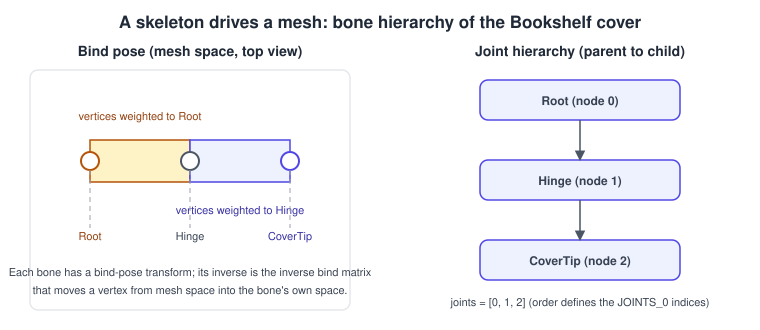
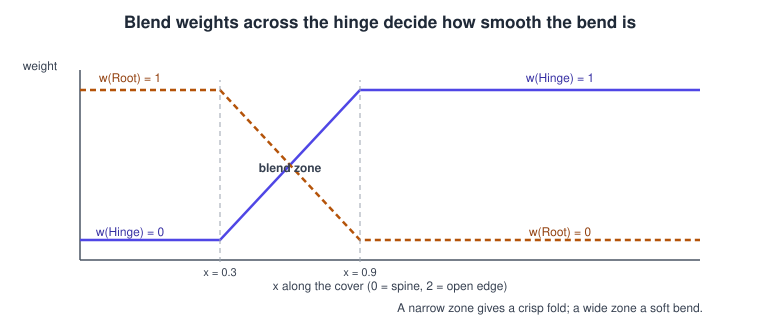
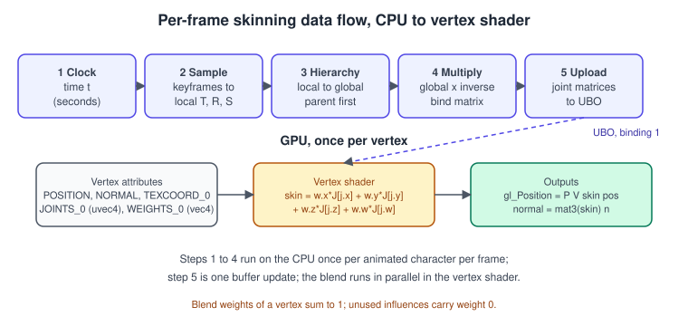
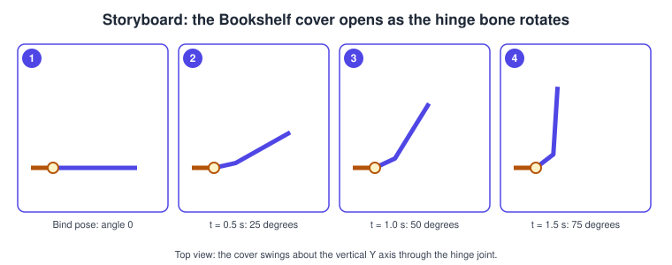

Skeletal Animation and Skinning in OpenGL
|
This content was generated with the assistance of AI and should be verified against the official documentation before being relied on in production. |
Skeletal animation moves a mesh by moving a hierarchy of joints (often called bones) and letting every vertex follow the joints that influence it. It is how characters walk, but it is just as good for a book cover that opens on a hinge, a flag, a tree trunk or a creature’s tail. In OpenGL there is no skinning feature to switch on: the technique is built from ordinary parts, a vertex shader, two extra vertex attributes and an array of matrices in a buffer, which makes it a good test of whether you understand the pipeline from the CPU to the vertex shader.
The facts were checked in November 2026. The page uses OpenGL 4.6 with GLSL 4.60 and the animation data model of glTF
2.0; everything except the direct-state-access calls (OpenGL 4.5) and the explicit binding qualifier works unchanged in
OpenGL ES 3.0 and later with GLSL ES 3.00, where only the #version line and the precision qualifiers differ. The code
needs a desktop OpenGL 4.6 context, C++20, GLFW, GLM and a glad2 loader (see Getting Started on Desktop). It continues the Bookshelf example: a book cover that opens and closes. The model
bookshelf.glb is a set of rigid parts and carries no skin, so the program builds a small
skinned strip in code, and the section on glTF shows how a real skin maps onto the same data structures. For the matrices
and quaternions used throughout, see Vectors, Matrices
and Homogeneous Coordinates, Rotations and Quaternions and
Coordinate Spaces and Transforms. The stage in which skinning runs is
described in The Rendering Pipeline.
The idea: a skeleton and a skin
A skinned mesh has two parts that are authored together:
-
the skin: a normal triangle mesh, modelled in a rest pose called the bind pose; and
-
the skeleton: a tree of joints, each with a transform relative to its parent, also shown in the bind pose.
Each vertex stores up to four influences: the indices of up to four joints and the weight of each one. A weight says how strongly the joint drags the vertex; the weights of a vertex add up to 1. Moving a joint in a later frame moves every vertex that has weight on it, and a vertex with weight on two joints is placed between the positions that each joint alone would give. The blend is what makes an elbow bend smoothly instead of tearing.

The figure shows the three joints of the example. Joint 0 is the root (the spine of the book), joint 1 is the hinge that the cover turns on and joint 2 is the outer edge of the cover, which can curl a little. The order of the joints in the skeleton is the numbering stored in the vertex attribute, so it must stay fixed once vertices refer to it.
The mathematics of linear blend skinning
This technique is known as linear blend skinning (LBS), or matrix-palette skinning. Three kinds of matrix are involved:
-
the bind matrix \( B_j \) of joint \( j \): the joint’s transform from joint space to mesh space in the bind pose;
-
the inverse bind matrix \( B_j^{-1} \): the reverse. It moves a bind-pose vertex into the local space of the joint, where the vertex is simply "that far from the joint"; and
-
the global transform \( G_j(t) \): where the joint is at time \( t \), computed by walking the hierarchy.
The joint matrix is the product \( J_j(t) = G_j(t) \, B_j^{-1} \). Read right to left, it takes a bind-pose point into the joint’s space and then moves it with the joint. For a vertex with influences \( (j_1, w_1) \dots (j_4, w_4) \) the skinned position and normal are
\[ \mathbf{ p }' = \sum_{ i = 1 }^{ 4 } w_i \, J_{ j_i }(t) \, \mathbf{ p }, \qquad \mathbf{ n }' = \operatorname{ normalize }\Big( \sum_{ i = 1 }^{ 4 } w_i \, J_{ j_i }(t) \Big)_{ 3 \times 3 } \mathbf{ n } \]
where \( \mathbf{ p } \) is the bind-pose position as a homogeneous vector. In the bind pose every \( G_j = B_j \), so every \( J_j \) is the identity and the mesh looks exactly as modelled. That identity is a good unit test: if the mesh deforms before any animation plays, the inverse bind matrices are wrong.
The model matrix, view and projection then apply as usual, after skinning: \( \mathbf{ p }_{ clip } = P \, V \, M \, \mathbf{ p }' \). Skinning happens in mesh space, before the object is placed in the world.
Why the normal matrix is only an approximation
Transforming a normal correctly needs the inverse transpose of the matrix. A blend of several joint matrices has no cheap inverse, so engines use the upper-left 3x3 of the blended matrix and renormalise. This is exact when the joints only rotate and translate, and good when scale is uniform. Non-uniform scale on joints produces visibly wrong shading; avoid it in the skeleton or compute the inverse transpose per joint on the CPU and blend those.
Weights across a joint
The width of the zone where two joints share a vertex decides how a bend looks.

The example uses a smooth ramp between \( x = 0.3 \) and \( x = 0.9 \) for the hinge, and a second ramp near the free edge for the curl joint. A very narrow zone folds like a sheet of card; a wide one gives a soft, rubbery bend. The weights are authored in a modelling tool in a real project; the program computes them from the vertex position.
From time to joint matrices, each frame
Every frame the CPU performs the same five steps before drawing; the shader does the rest.

-
Clock: take the animation time, usually wrapped with
fmodso the clip loops. -
Sample: for each animated channel (translation, rotation, scale of a joint) find the two keyframes around the time and interpolate.
-
Hierarchy: build each joint’s local matrix \( T R S \) and multiply by the parent’s global matrix. Parents must be processed before children, which a parent-before-child ordering of the joint array guarantees.
-
Multiply: \( J_j = G_j \, B_j^{-1} \) for every joint.
-
Upload: copy all joint matrices to a uniform buffer (or shader storage buffer) once per character per frame.
Keyframes and interpolation
An animation clip stores, for each joint and each of translation, rotation and scale, a list of keyframe times and values.
Translation and scale are interpolated linearly. Rotation is a unit quaternion, interpolated with slerp (spherical linear
interpolation) so the angular speed is constant and the result stays a unit quaternion; interpolating the four components
linearly and normalising (nlerp) is cheaper and acceptable for closely spaced keys. Never interpolate Euler angles: gimbal
lock and axis order make the path unpredictable. glTF 2.0 defines three interpolation modes per sampler, LINEAR, STEP and
CUBICSPLINE; the program implements linear, which is what most exported clips use.
Keyframe times are in seconds in glTF, rotations are quaternions stored as x, y, z, w and the animated properties are
translation, rotation, scale and, for morph targets, weights. Note the component order: GLM’s constructor
glm::quat(w, x, y, z) takes w first, while glTF stores w last, a classic cause of nonsense poses after importing.

Vertex data: joints and weights
Two attributes are added to the mesh:
| Attribute | Type in the shader | Typical storage |
|---|---|---|
Joint indices |
|
4 unsigned bytes, or 4 unsigned shorts when a skeleton has more than 256 joints |
Joint weights |
|
4 floats, or 4 normalised unsigned bytes or shorts to save memory |
The indices must be bound as integer attributes. With the older glVertexAttribPointer, an integer buffer is converted to
float on the way in, which breaks the array lookup; the integer entry point is glVertexAttribIPointer, and with
direct state access glVertexArrayAttribIFormat. Mixing the two up is the most common first-day skinning bug: the mesh
collapses to the first joint or explodes. Weights are ordinary float attributes (a normalised integer type is fine because the
conversion to float happens in the vertex fetch).
Unused influences carry weight 0 and a valid index (use 0). Meshes with more than four influences per vertex need a second
pair of attributes (JOINTS_1, WEIGHTS_1 in glTF) or a reduction to the four strongest weights, renormalised so they sum to 1;
real-time characters almost always use four.
The glTF skin
A glTF file stores a skin as an object listing the joint nodes, with an accessor of 4x4 inverse bind matrices:
| glTF data | Where it goes in this program |
|---|---|
|
the skeleton array; position in this list is the joint index used by the vertices |
|
the |
primitive attributes |
the integer and float vertex attributes above |
node hierarchy: |
the parent index and bind-pose local transforms of each joint |
animation channels with path |
the keyframe tracks of the joint’s node |
The specification defines the joint matrix as the inverse of the skinned mesh node’s global transform, times the joint’s global transform, times the inverse bind matrix. It also says that the transform of the node that holds a skinned mesh does not apply to the mesh, so loaders take the mesh at the origin of the skeleton’s space and place the whole skeleton with a model matrix, as this program does. Loading all of this from a file is described in Asset Loading: glTF and OBJ.
The shaders
The vertex shader blends four joint matrices and places the vertex; the fragment shader paints a simple checker pattern and, when asked, the weights themselves as red, green and blue, which is the quickest way to debug skinning.
#version 460 core
layout(location = 0) in vec3 aPosition;
layout(location = 1) in vec3 aNormal;
layout(location = 2) in vec2 aUv;
layout(location = 3) in uvec4 aJoints;
layout(location = 4) in vec4 aWeights;
const int MAX_JOINTS = 64;
layout(std140, binding = 1) uniform Skin {
mat4 uJoint[MAX_JOINTS];
};
uniform mat4 uModel;
uniform mat4 uViewProj;
out vec3 vNormal;
out vec2 vUv;
out vec3 vWeights;
void main()
{
mat4 skin = aWeights.x * uJoint[aJoints.x]
+ aWeights.y * uJoint[aJoints.y]
+ aWeights.z * uJoint[aJoints.z]
+ aWeights.w * uJoint[aJoints.w];
gl_Position = uViewProj * uModel * skin * vec4(aPosition, 1.0);
vNormal = mat3(uModel) * mat3(skin) * aNormal;
vUv = aUv;
vWeights = aWeights.xyz;
}#version 460 core
in vec3 vNormal;
in vec2 vUv;
in vec3 vWeights;
uniform bool uShowWeights;
out vec4 oColor;
void main()
{
vec3 n = normalize(vNormal);
if (!gl_FrontFacing) n = -n; // the cover is a single sided strip
float diffuse = max(dot(n, normalize(vec3(0.4, 0.8, 0.6))), 0.0);
vec2 cell = floor(vUv * vec2(8.0, 6.0));
float checker = mod(cell.x + cell.y, 2.0);
vec3 base = mix(vec3(0.55, 0.15, 0.12), vec3(0.75, 0.30, 0.20), checker);
if (uShowWeights) base = vWeights;
oColor = vec4(base * (0.25 + 0.75 * diffuse), 1.0);
}Source: GLSL 4.60 specification
The uJoint array has a fixed size known at compile time because it lives in a uniform block. The constant is a ceiling, not a
count; a character with 40 joints uses the first 40 entries and leaves the rest untouched. In std140 layout a mat4 array has a
stride of 64 bytes, so the block is 64 * MAX_JOINTS bytes, with no padding surprises; this is one reason uniform blocks suit
matrices better than vec3 arrays.
In OpenGL ES, change the first line to #version 300 es, add precision highp float; precision highp int; and replace the
binding qualifier by glUniformBlockBinding, since binding for uniform blocks arrived in GLSL ES 3.10. Everything else is
identical.
The complete program
The program builds the skinned strip in code, loops a three-keyframe clip and draws it. It needs no external asset. Press W to show the weights as colour and Esc to quit.
// main.cpp: Bookshelf GL, skinned book cover. C++20, glad2 (gl:core=4.6), GLFW 3.4 or newer, GLM 1.0.
#include <glad/gl.h>
#include <GLFW/glfw3.h>
#include <glm/glm.hpp>
#include <glm/gtc/matrix_transform.hpp>
#include <glm/gtc/quaternion.hpp>
#include <glm/gtc/type_ptr.hpp>
#include <algorithm>
#include <array>
#include <cmath>
#include <cstdint>
#include <cstdio>
#include <cstddef>
#include <cstdlib>
#include <string>
#include <vector>
// ---------------------------------------------------------------- skeleton and animation data
struct Pose { glm::vec3 t{0.0f}; glm::quat r{1.0f, 0.0f, 0.0f, 0.0f}; glm::vec3 s{1.0f}; };
struct Joint {
std::string name;
int parent; // -1 for the root; parents always come before children
Pose bind; // local bind-pose transform
glm::mat4 inverseBind{1.0f};
};
struct QuatTrack { // rotation keyframes of one joint
std::vector<float> times;
std::vector<glm::quat> values;
};
static glm::mat4 toMatrix(const Pose& p) {
return glm::translate(glm::mat4(1.0f), p.t) * glm::mat4_cast(p.r) * glm::scale(glm::mat4(1.0f), p.s);
}
static glm::quat sampleRotation(const QuatTrack& tr, float time) {
const float t = std::fmod(time, tr.times.back()); // loop the clip
const auto it = std::upper_bound(tr.times.begin(), tr.times.end(), t);
const std::size_t i1 = static_cast<std::size_t>(it - tr.times.begin());
if (i1 == 0) return tr.values.front();
if (i1 >= tr.times.size()) return tr.values.back();
const std::size_t i0 = i1 - 1;
const float f = (t - tr.times[i0]) / (tr.times[i1] - tr.times[i0]);
return glm::normalize(glm::slerp(tr.values[i0], tr.values[i1], f));
}
constexpr int kMaxJoints = 64;
static std::vector<Joint> makeSkeleton() {
std::vector<Joint> j(3);
j[0] = {"Root", -1, Pose{}, glm::mat4(1.0f)};
j[1] = {"Hinge", 0, Pose{}, glm::mat4(1.0f)};
j[2] = {"CoverTip", 1, Pose{glm::vec3(2.0f, 0.0f, 0.0f)}, glm::mat4(1.0f)};
// Inverse bind matrices: walk the hierarchy once in the bind pose and invert the global transforms.
std::vector<glm::mat4> global(j.size());
for (std::size_t i = 0; i < j.size(); ++i) {
const glm::mat4 local = toMatrix(j[i].bind);
global[i] = j[i].parent < 0 ? local : global[static_cast<std::size_t>(j[i].parent)] * local;
j[i].inverseBind = glm::inverse(global[i]);
}
return j;
}
// Joint matrices for time t: J[i] = global(i) * inverseBind(i).
static void computeJointMatrices(const std::vector<Joint>& skel, const std::array<QuatTrack, 3>& tracks,
float time, std::vector<glm::mat4>& out) {
std::vector<glm::mat4> global(skel.size());
out.resize(skel.size());
for (std::size_t i = 0; i < skel.size(); ++i) {
Pose p = skel[i].bind;
if (!tracks[i].times.empty()) p.r = sampleRotation(tracks[i], time); // the channel replaces the bind rotation
const glm::mat4 local = toMatrix(p);
global[i] = skel[i].parent < 0 ? local : global[static_cast<std::size_t>(skel[i].parent)] * local;
out[i] = global[i] * skel[i].inverseBind;
}
}
// ---------------------------------------------------------------- mesh: a 2 x 1.5 strip, 24 columns
struct Vertex {
float position[3];
float normal[3];
float uv[2];
std::uint8_t joints[4];
float weights[4];
};
static_assert(sizeof(Vertex) == 52, "tightly packed vertex expected");
static float smooth(float a, float b, float x) {
const float t = std::clamp((x - a) / (b - a), 0.0f, 1.0f);
return t * t * (3.0f - 2.0f * t);
}
static void makeStrip(std::vector<Vertex>& vertices, std::vector<std::uint32_t>& indices) {
constexpr int columns = 24;
for (int row = 0; row <= 1; ++row) {
for (int c = 0; c <= columns; ++c) {
const float u = static_cast<float>(c) / columns;
const float x = 2.0f * u;
const float toHinge = smooth(0.3f, 0.9f, x); // 0 at the spine, 1 beyond the blend zone
const float toTip = smooth(1.4f, 2.0f, x); // takes over near the free edge
Vertex v{};
v.position[0] = x; v.position[1] = 1.5f * static_cast<float>(row); v.position[2] = 0.0f;
v.normal[2] = 1.0f;
v.uv[0] = u; v.uv[1] = static_cast<float>(row);
v.joints[0] = 0; v.joints[1] = 1; v.joints[2] = 2; v.joints[3] = 0;
v.weights[0] = 1.0f - toHinge; // Root
v.weights[1] = toHinge - toTip; // Hinge
v.weights[2] = toTip; // CoverTip
v.weights[3] = 0.0f; // unused, weight 0, valid index 0
vertices.push_back(v);
}
}
for (int c = 0; c < columns; ++c) {
const std::uint32_t a = static_cast<std::uint32_t>(c), b = a + 1;
const std::uint32_t d = a + columns + 1, e = d + 1;
indices.insert(indices.end(), {a, b, e, a, e, d});
}
}
// ---------------------------------------------------------------- shaders
static const char* kVertex = R"GLSL(#version 460 core
layout(location = 0) in vec3 aPosition;
layout(location = 1) in vec3 aNormal;
layout(location = 2) in vec2 aUv;
layout(location = 3) in uvec4 aJoints;
layout(location = 4) in vec4 aWeights;
const int MAX_JOINTS = 64;
layout(std140, binding = 1) uniform Skin { mat4 uJoint[MAX_JOINTS]; };
uniform mat4 uModel;
uniform mat4 uViewProj;
out vec3 vNormal;
out vec2 vUv;
out vec3 vWeights;
void main() {
mat4 skin = aWeights.x * uJoint[aJoints.x] + aWeights.y * uJoint[aJoints.y]
+ aWeights.z * uJoint[aJoints.z] + aWeights.w * uJoint[aJoints.w];
gl_Position = uViewProj * uModel * skin * vec4(aPosition, 1.0);
vNormal = mat3(uModel) * mat3(skin) * aNormal;
vUv = aUv;
vWeights = aWeights.xyz;
}
)GLSL";
static const char* kFragment = R"GLSL(#version 460 core
in vec3 vNormal;
in vec2 vUv;
in vec3 vWeights;
uniform bool uShowWeights;
out vec4 oColor;
void main() {
vec3 n = normalize(vNormal);
if (!gl_FrontFacing) n = -n;
float diffuse = max(dot(n, normalize(vec3(0.4, 0.8, 0.6))), 0.0);
vec2 cell = floor(vUv * vec2(8.0, 6.0));
float checker = mod(cell.x + cell.y, 2.0);
vec3 base = mix(vec3(0.55, 0.15, 0.12), vec3(0.75, 0.30, 0.20), checker);
if (uShowWeights) base = vWeights;
oColor = vec4(base * (0.25 + 0.75 * diffuse), 1.0);
}
)GLSL";
static GLuint compile(GLenum type, const char* src) {
const GLuint s = glCreateShader(type);
glShaderSource(s, 1, &src, nullptr);
glCompileShader(s);
GLint ok = 0;
glGetShaderiv(s, GL_COMPILE_STATUS, &ok);
if (!ok) {
char log[2048];
glGetShaderInfoLog(s, sizeof log, nullptr, log);
std::fprintf(stderr, "shader error:\n%s\n", log);
std::exit(EXIT_FAILURE);
}
return s;
}
static GLuint link(const char* vs, const char* fs) {
const GLuint v = compile(GL_VERTEX_SHADER, vs), f = compile(GL_FRAGMENT_SHADER, fs);
const GLuint p = glCreateProgram();
glAttachShader(p, v); glAttachShader(p, f);
glLinkProgram(p);
GLint ok = 0;
glGetProgramiv(p, GL_LINK_STATUS, &ok);
if (!ok) {
char log[2048];
glGetProgramInfoLog(p, sizeof log, nullptr, log);
std::fprintf(stderr, "link error:\n%s\n", log);
std::exit(EXIT_FAILURE);
}
glDeleteShader(v); glDeleteShader(f);
return p;
}
static bool gShowWeights = false;
static void onKey(GLFWwindow* w, int key, int, int action, int) {
if (action != GLFW_PRESS) return;
if (key == GLFW_KEY_ESCAPE) glfwSetWindowShouldClose(w, GLFW_TRUE);
if (key == GLFW_KEY_W) gShowWeights = !gShowWeights;
}
int main() {
if (!glfwInit()) return EXIT_FAILURE;
glfwWindowHint(GLFW_CONTEXT_VERSION_MAJOR, 4);
glfwWindowHint(GLFW_CONTEXT_VERSION_MINOR, 6);
glfwWindowHint(GLFW_OPENGL_PROFILE, GLFW_OPENGL_CORE_PROFILE);
GLFWwindow* window = glfwCreateWindow(960, 600, "Bookshelf GL: skinned cover", nullptr, nullptr);
if (!window) { std::fprintf(stderr, "no OpenGL 4.6 context\n"); glfwTerminate(); return EXIT_FAILURE; }
glfwMakeContextCurrent(window);
glfwSwapInterval(1);
glfwSetKeyCallback(window, onKey);
if (!gladLoadGL(glfwGetProcAddress)) { std::fprintf(stderr, "glad failed\n"); return EXIT_FAILURE; }
// CPU side data
const std::vector<Joint> skeleton = makeSkeleton();
std::array<QuatTrack, 3> tracks;
const glm::vec3 up(0.0f, 1.0f, 0.0f);
tracks[1] = {{0.0f, 1.5f, 3.0f}, {glm::angleAxis(0.0f, up), glm::angleAxis(glm::radians(75.0f), up), glm::angleAxis(0.0f, up)}};
tracks[2] = {{0.0f, 1.5f, 3.0f}, {glm::angleAxis(0.0f, up), glm::angleAxis(glm::radians(20.0f), up), glm::angleAxis(0.0f, up)}};
std::vector<Vertex> vertices;
std::vector<std::uint32_t> indices;
makeStrip(vertices, indices);
// GPU objects, direct state access (OpenGL 4.5+)
GLuint vbo = 0, ebo = 0, vao = 0, ubo = 0;
glCreateBuffers(1, &vbo);
glNamedBufferStorage(vbo, static_cast<GLsizeiptr>(vertices.size() * sizeof(Vertex)), vertices.data(), 0);
glCreateBuffers(1, &ebo);
glNamedBufferStorage(ebo, static_cast<GLsizeiptr>(indices.size() * sizeof(std::uint32_t)), indices.data(), 0);
glCreateVertexArrays(1, &vao);
glVertexArrayVertexBuffer(vao, 0, vbo, 0, sizeof(Vertex));
glVertexArrayElementBuffer(vao, ebo);
glEnableVertexArrayAttrib(vao, 0); glVertexArrayAttribFormat(vao, 0, 3, GL_FLOAT, GL_FALSE, offsetof(Vertex, position));
glEnableVertexArrayAttrib(vao, 1); glVertexArrayAttribFormat(vao, 1, 3, GL_FLOAT, GL_FALSE, offsetof(Vertex, normal));
glEnableVertexArrayAttrib(vao, 2); glVertexArrayAttribFormat(vao, 2, 2, GL_FLOAT, GL_FALSE, offsetof(Vertex, uv));
glEnableVertexArrayAttrib(vao, 3); glVertexArrayAttribIFormat(vao, 3, 4, GL_UNSIGNED_BYTE, offsetof(Vertex, joints)); // integer attribute
glEnableVertexArrayAttrib(vao, 4); glVertexArrayAttribFormat(vao, 4, 4, GL_FLOAT, GL_FALSE, offsetof(Vertex, weights));
for (GLuint a = 0; a < 5; ++a) glVertexArrayAttribBinding(vao, a, 0);
glCreateBuffers(1, &ubo);
glNamedBufferStorage(ubo, kMaxJoints * sizeof(glm::mat4), nullptr, GL_DYNAMIC_STORAGE_BIT);
glBindBufferBase(GL_UNIFORM_BUFFER, 1, ubo); // matches binding = 1 in the shader
const GLuint program = link(kVertex, kFragment);
const GLint locModel = glGetUniformLocation(program, "uModel");
const GLint locViewProj = glGetUniformLocation(program, "uViewProj");
const GLint locWeights = glGetUniformLocation(program, "uShowWeights");
glEnable(GL_DEPTH_TEST);
std::vector<glm::mat4> joints;
while (!glfwWindowShouldClose(window)) {
int w = 0, h = 0;
glfwGetFramebufferSize(window, &w, &h);
glViewport(0, 0, w, h);
glClearColor(0.93f, 0.92f, 0.90f, 1.0f);
glClear(GL_COLOR_BUFFER_BIT | GL_DEPTH_BUFFER_BIT);
// 1 to 4: sample the clip and build the joint matrices
computeJointMatrices(skeleton, tracks, static_cast<float>(glfwGetTime()), joints);
// 5: upload only the joints in use
glNamedBufferSubData(ubo, 0, static_cast<GLsizeiptr>(joints.size() * sizeof(glm::mat4)), joints.data());
const float aspect = h > 0 ? static_cast<float>(w) / static_cast<float>(h) : 1.0f;
const glm::mat4 proj = glm::perspective(glm::radians(40.0f), aspect, 0.1f, 50.0f);
const glm::mat4 view = glm::lookAt(glm::vec3(1.2f, 2.4f, 5.0f), glm::vec3(1.0f, 0.7f, 0.0f), up);
const glm::mat4 viewProj = proj * view;
const glm::mat4 model(1.0f);
glUseProgram(program);
glProgramUniformMatrix4fv(program, locModel, 1, GL_FALSE, glm::value_ptr(model));
glProgramUniformMatrix4fv(program, locViewProj, 1, GL_FALSE, glm::value_ptr(viewProj));
glProgramUniform1i(program, locWeights, gShowWeights ? 1 : 0);
glBindVertexArray(vao);
glDrawElements(GL_TRIANGLES, static_cast<GLsizei>(indices.size()), GL_UNSIGNED_INT, nullptr);
glfwSwapBuffers(window);
glfwPollEvents();
}
glDeleteProgram(program);
glDeleteVertexArrays(1, &vao);
GLuint buffers[] = {vbo, ebo, ubo};
glDeleteBuffers(3, buffers);
glfwDestroyWindow(window);
glfwTerminate();
return EXIT_SUCCESS;
}Source: OpenGL 4 reference: glBindBufferBase; glVertexAttribIPointer; glNamedBufferSubData; glDrawElements
The build files, with the glad2 loader generated at configure time (the Python package glad2 provides the generator):
cmake_minimum_required(VERSION 3.24)
project(bookshelf_skinning CXX)
set(CMAKE_CXX_STANDARD 20)
set(CMAKE_CXX_STANDARD_REQUIRED ON)
include(FetchContent)
FetchContent_Declare(glfw GIT_REPOSITORY https://github.com/glfw/glfw.git GIT_TAG 3.4)
FetchContent_Declare(glm GIT_REPOSITORY https://github.com/g-truc/glm.git GIT_TAG 1.0.1)
set(GLFW_BUILD_DOCS OFF CACHE BOOL "" FORCE)
set(GLFW_BUILD_TESTS OFF CACHE BOOL "" FORCE)
set(GLFW_BUILD_EXAMPLES OFF CACHE BOOL "" FORCE)
FetchContent_MakeAvailable(glfw glm)
# glad2: generate with `pip install glad2` and
# glad --api gl:core=4.6 --out-path glad-out c
add_library(glad STATIC glad-out/src/gl.c)
target_include_directories(glad PUBLIC glad-out/include)
add_executable(skinning main.cpp)
target_link_libraries(skinning PRIVATE glfw glm::glm glad)Press W while the program runs to see the weights: red near the spine, green in the hinge zone, blue at the free edge, with blends in between.
Where the joint matrices live
The uniform block is the simplest home for the matrix palette, and it is not the only one.
| Storage | Needs | Notes |
|---|---|---|
Plain |
any version |
Limited by |
Uniform buffer (UBO) |
OpenGL 3.1, ES 3.0 |
Size limited by |
Shader storage buffer (SSBO) |
OpenGL 4.3, ES 3.1 |
Practically unbounded and can be indexed per instance; also writable from compute shaders |
Buffer texture or float texture |
OpenGL 3.1, ES 3.0 (float texture) |
Works where SSBOs are unavailable; one matrix is read with four |
Skeletons over 256 joints, or many characters sharing one buffer, move to an SSBO with a per-character offset (an instance
attribute or a uniform). Four-by-three matrices (three rows of vec4) cut the palette by a quarter because the last row of a
joint matrix is always 0, 0, 0, 1 when there is no projection. Always query the limits on the target device rather than
assuming them: glGetIntegerv(GL_MAX_UNIFORM_BLOCK_SIZE, &n).
Alternatives and extensions
-
Dual quaternion skinning blends rotation and translation as dual quaternions; it removes the "candy wrapper" collapse of linear blending at twisting joints, at the price of a more complex shader and some bulging.
-
Morph targets (blend shapes) add weighted vertex offsets and are used for facial expressions; glTF stores their weights as a separate animation path and the shader sums them with the skinned position.
-
GPU skinning in compute: run skinning in a compute shader that writes a vertex buffer, then draw that buffer several times (shadow pass, main pass) without repeating the blend; transform feedback does the same on hardware without compute. The pages Compute Shaders and Sync, Queries and Transform Feedback cover the mechanisms.
-
Animation blending: crossfading two clips means blending joint poses (translation lerp, rotation slerp) before building the matrices, never blending the finished joint matrices.
-
Root motion and inverse kinematics are CPU-side concerns that change the local poses fed into step 3.
Common mistakes
-
Wrong multiplication order. The joint matrix is
global * inverseBind; with GLM’s column-vector convention the shader expression isskin * vec4(position, 1.0). Reversing the product folds the mesh into the wrong space. -
Not using the integer attribute call. Joint indices bound with
glVertexAttribPointerand auvec4input silently read garbage; useglVertexAttribIPointerorglVertexArrayAttribIFormat. -
Weights that do not sum to 1. The mesh shrinks toward the origin where the sum is below 1 and grows where it is above. Renormalise after reducing influences.
-
Parent order. If a child is processed before its parent in the array, the global transform is built from stale data. Sort the joints so parents come first when importing.
-
Inverse bind computed from the wrong pose. It must be the inverse of the global bind transform in the pose in which the mesh was skinned. The mesh must look unchanged with all animation tracks muted.
-
Exceeding
MAX_JOINTS. An out-of-range index reads outside the block, which is undefined behaviour in GLSL and shows up as random spikes on some GPUs and nothing on others. Clamp indices when importing. -
Quaternion component order. GLM constructs from
(w, x, y, z); glTF and most file formats store(x, y, z, w). -
Normalised integer indices. Joint indices are plain integers; do not mark the attribute normalised.
-
Interpolating matrices. Interpolate translation, rotation and scale separately and rebuild the matrix, since matrices do not interpolate to valid rigid transforms.
-
Uploading the whole 64-joint block every frame for a 3-joint character is harmless, but for hundreds of characters upload only the used range.
Performance notes
-
Skinning costs four matrix-vector products per vertex (or one blended 4x4 and a product); on a modern GPU this is rarely the bottleneck for a character of tens of thousands of vertices. The CPU side (sampling, hierarchy, uploads) grows with the number of characters, so batch uploads and update only characters that are on screen.
-
Use
glNamedBufferSubDataor a persistently mapped buffer with fences for per-frame data; avoid recreating the buffer. A ring of buffers avoids stalling when the GPU is still reading last frame’s matrices. See Performance. -
Reduce vertex size: pack indices as 4 bytes and weights as normalised unsigned bytes (4 bytes), which brings a skinned vertex to a handful of bytes more than a static one.
-
If the same skinned mesh is drawn in several passes (depth pre-pass, shadow map, colour), skin once in a compute pass or transform-feedback pass and reuse the result.
-
Limit influences to four unless the content needs more; a fifth to eighth influence doubles the attribute fetch.
What changed compared with older guides
| Older material | Today |
|---|---|
Skinning with fixed-function matrix palettes ( |
Removed from the core profile; matrix palettes are plain uniforms or buffers read in the vertex shader |
Skinning on OpenGL ES 2.0 with 32 matrices in |
ES 3.0 and later (API 18 and higher on Android) have integer attributes, uniform blocks of at least 16 KB and, from ES 3.1, shader storage buffers |
Bone data baked into MD5 or X files and loaded with bespoke code |
glTF 2.0 is the interchange format with a standard skin and animation model, so one loader serves the engine and the tools |
Per-vertex lookups through uniform arrays of |
Matrices in uniform buffers are the norm; dual quaternions are an option for quality |
Examples using |
OpenGL 4.2 and GLSL 4.20 add the |
See also
-
Uniforms, UBOs and SSBOs: the layout rules behind the joint block.
-
Buffers and Vertex Specification: integer attributes and strides.
-
Asset Loading: glTF and OBJ: reading skins and animations from files.
-
Direct State Access: the
glCreate*andglNamed*calls used above. -
Scene Graphs and Asset Formats: node hierarchies and glTF.
-
Meshes and Vertex Data: vertex layouts in general.
-
Porting to Vulkan, Metal and WebGPU: where the same technique goes next.